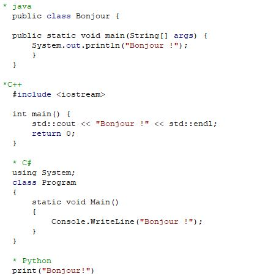
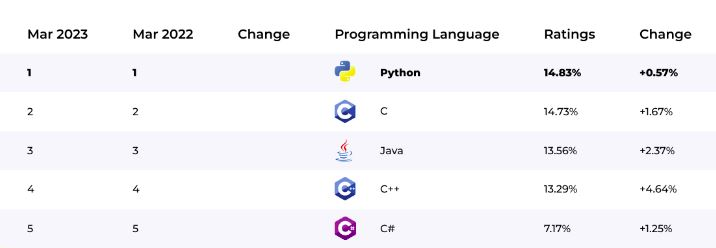

Les éléments de base
Contenu
Les éléments de base¶

1.1. C’est quoi Python ?¶
Python
Python est un langage de programmation de haut niveau (high-level programming language), avec des applications dans de nombreux domaines, notamment :
La programmation Web;
Le calcul scientifique;
Le gaming
L’intelligence artificielle !
Le language Python
Le langage Python est un de langage Interprété et dynamique. Il support la programmation orienté objet et il est ineffaçable avec plusieurs autres langages de programmation. L’un des plus grands avantages de Python est sa lisibilité, la simplicité de sa syntaxe et une large communauté qui est derrière son développement.
1.2. Pourquoi devriez-vous apprendre Python ?¶
Choix de python
Apprendre Python offre de nombreux avantages en raison de ses caractéristiques et de sa polyvalence.
Multiplateforme (Windows, Linux, MacOs,…etc.)

Simplicité et sa syntaxe et proche de la langue anglaise

Eco-système riche et complet

Open source et gratuit
Cela signifie que vous pouvez utiliser, modifier et distribuer le langage Python sans frais. La nature open source de Python favorise la collaboration, l’innovation et la création de nombreuses bibliothèques et frameworks qui enrichissent l’écosystème Python
Un des languages les plus populaires

Traitement de données et analyse
Python est très populaire et utilisé par des organisations telles que Google, la NASA, la CIA, Disney..etc.

Le présent chapitre introduit les éléments de base da la programmation sous Python. Il introduit les grandes caractéristiques du langage Python en mettant l’accent sur :
Les opérations arithmétique en Python
Affectation et variables
Types de données de base dans Python
Opérateurs logiques et relationnels
Affichage Lecture d’informations
2. Premier contact¶
Commençons par créer un programme court qui affiche la fameuse phrase « Hello world! ». En Python, on utilise la fonction print pour afficher du texte comme output
print("Hello world!")
Hello world!
3. Manipulation de chaînes de caractères¶
On peut créer une chaîne de caractères en mettant entre guillemets le contenu de la variable et en utilisant le signe égal (=). Il est à noter qu’une chaîne de caractères est une classe d’objets qui consiste en une série de caractères
print("Bonjour Adam!")
print('Bonjour Adam!')
3.1. Concaténer¶
Concaténer Ce terme signifie “joindre des chaînes de caractères”. Ce processus est appelé la concaténation de chaînes, et s’effectue en utilisant l’opérateur plus (+).
print("Bonjour"+"Adam!")
BonjourAdam!
Notez qu’il vous faut indiquer explicitement là où vous voulez que des espaces apparaissent, en les mettant eux aussi entre des guillemets simples.
print("Bonjour "+"Adam!")
print("Bonjour"+" Adam!")
print("Bonjour"+" "+"Adam!")
Bonjour Adam!
Bonjour Adam!
Bonjour Adam!
3.2. Multiplier¶
Si vous voulez plusieurs copies d’une chaîne de caractères, utilisez l’opérateur de la multiplication (*).
print('bonjour ' * 3)
bonjour bonjour bonjour
3.3. longueur¶
Vous pouvez déterminer le nombre de caractères contenus dans une chaîne de caractères à l’aide de len. Notez que l’espace blanc compte comme un caractère séparé.
print(len("bonjour Adam!"))
13
3.4. Minuscules/majuscules¶
Il est parfois utile de convertir une chaîne de caractères en minuscules .lower() ou majuscules .upper() . Par exemple, il est plus facile pour l’ordinateur de reconnaître que “Bonjour” et “bonjour” sont le même mot si nous standardisons les casses au préalable.
message = "BONJOUR LE MONDE"
message1 = message.lower()
print(message1)
bonjour le monde
message = "bonjour le monde"
message2 = message.upper()
print(message2)
BONJOUR LE MONDE
3.5. Couper¶
Si vous voulez couper les parties non désirées au début ou à la fin d’une chaîne de caractères, vous pouvez le faire en créant une nouvelle chaîne à l’aide de l’opérateur :.
message = "Python est un langage de programmation interprété"
message1= message[0:20]
print(message1)
Python est un langag
3.6. Remplacer¶
Si vous avez besoin de remplacer une sous-chaîne à l’intérieur d’une chaîne, vous pouvez le faire avec la méthode replace.
message = "Python est un langage de programmation interprété"
message1= message.replace("programmation" , "code")
print(message1)
Python est un langage de code interprété
4. Les opérations arithmétiques en Python¶
Dans sa forme la plus élémentaire, Python peut être utilisé tout simplement comme une calculatrice. Il peut réaliser les opérations arithmétiques suivantes :
Addition :
+Soustraction :
-Multiplication :
*Division entière :
//Division :
/Exponentiation :
**Modulo :
%
On rappelle que la division entière renvoi le quotient de la division euclidienne et le modulo renvoie le reste de la division euclidienne. Par exemple 7 // 4 est 1; 7 % 4 est 3, 5//2 est 2; 5%2 est 1.
Commençons maintenant à programmer. Nous voulons calculer 1+5, 5-4, 4*3, (10+8)/3, 2**4, 28//6 et 28%6; Comme dans la plupart des langages de programmation, on utilise les symboles suivants pour les opérations mathématiques:
# addition
print(1+5)
# soustraction
print(5-4)
# multiplication
print(4*3)
# division
print((10+8)/3)
# exponentiation
print(2**4)
# division entière
print(28//6)
# modulo
print(28%6)
6
1
12
6.0
16
4
4
Note
Toute chose commençant par # est un commentaire, il sera ignoré par Python.
Les commentaires sont une bonne manière de savoir ce qu’on fait ou pour qu’une autre personne sache ce qu’on fait.
Les commentaires usuels:
# Ceci est un commentaire
Les commentaires en fin de ligne:
A = 7 # Ceci est un commentaire
En Python, comme dans de nombreux langages de programmation, les opérations mathématiques suivent l’ordre de priorité standard défini par les règles mathématiques. L’ordre d’exécution des opérations mathématiques est souvent mémorisé à l’aide de l’acronyme (Please Excuse My Dear Aunt Sally) PEMDAS, qui signifie :
P= Parentheses;
E= Exponents;
M= Multiplication;
D= Division;
A= Addition;
S= Substraction.
Exercice
Quelle est, selon vous, le résultat de ces opérations :
Verifier avec Python.